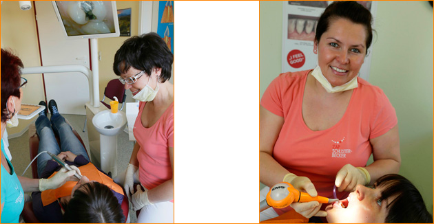
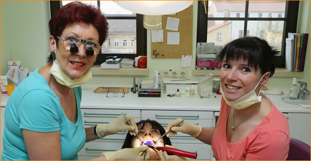

Zahnarztpraxis Schlüter-Becker
Unser Team
Das Team

Dipl.-Med. Sigrid Schlüter-Becker + Team
Verwaltung
Doreen Bossog Mandy Reimann
Assistenz

Martina Weißling Mandy Reimann
Prophylaxe

Sigrid Schlüter-Becker Aline Kühn